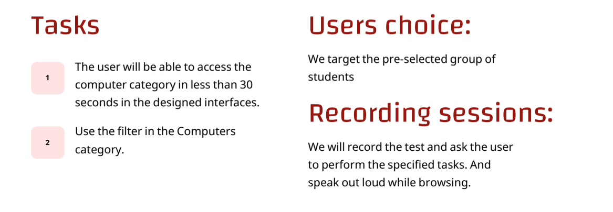

Jarir
The main goal of the project is to improve the user experience of the Jarir application, which is
an important tool for wholesale and retail trade in office and school supplies and books.
With increasing competition in this field, it is important for companies like Jarir to constantly improve
their digital presence to meet users'needs and expectations The legislator focuses on
redesigning interfaces Create a simple interface without clutter.
Scope Of Work
Project Timeline
competitive analysis
User Persona
Sitemap
Old Design Interfaces
In the old homepage design, there was an annoying repetition of categories, with the most popular weekly offers and newly arrived offers displayed at the top, then repeated in the same way further down. Additionally, the colors were confusing for users, as each category had a different color that didn’t align with its nature, and closely related categories, like electronics, were spaced far apart. Overall, the design was cluttered, the categories were not arranged properly, the colors were uncoordinated, and the interface was visually uncomfortable and confusing for users.
Redesigned Interfaces
Style Guide
Typography
User Testing
We used user testing because it plays acrucial role in understanding the importance of user experience and helps in evaluating the ease of use of a product or service.
